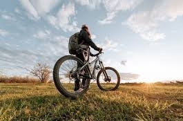
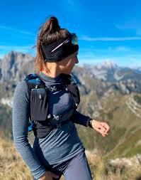

Sobre mí
Hola, bienvenid@ a mi autobiografia !! Mi nombre es Katherine Murcia, soy estudiante de IV Semestre de Ingeniería de Sistemas de la Universidad El Bosque. Soy llanera, nací en San Martín - Meta, pero hace aproximadamente 9 años vivo en Bogotá. Soy muy espiritual; Dios y mi familia están siempre primero. Te invito a conocer un poco más de mi vida.
1. Mis gustos deportivos
Desde mi infancia me encanta el deporte, hace parte de mi vida, especialmente:
MTB: Mountain bike

Me encanta salir a rodar en mis tiempos libres, especialmente en la montaña. Practico este deporte aproximadamente desde 2018.
Trekking y Senderismo

En general soy aficionada de la naturaleza y todo lo que involucre montaña, amo desconectarme de lo cotidiano y disfrutar de las cosas simples de la vida. Tengo como meta a corto plazo escalar un nevado.
Gym: Gimnasio
Entreno pesas por lo menos 3 o 4 veces a la semana, es mi terapia. Practico de manera constante desde hace más de 3 años.
2. Formación académica
Actualmente curso la asignatura Programación II dirigida por el profesor Juan Camilo Hernández. Estoy en IV semestre de Ingenieria de Sistemas.
3. Intereses
Algunos de mis intereses principales son:
- Desarrollo web
- Programación
- Tecnología
- Aprender nuevas herramientas digitales
4. Datos curiosos
- Color favorito: Negro
- Comida favorita: Pizza
- Bebida favorita: Café
- Animal favorito: Perro